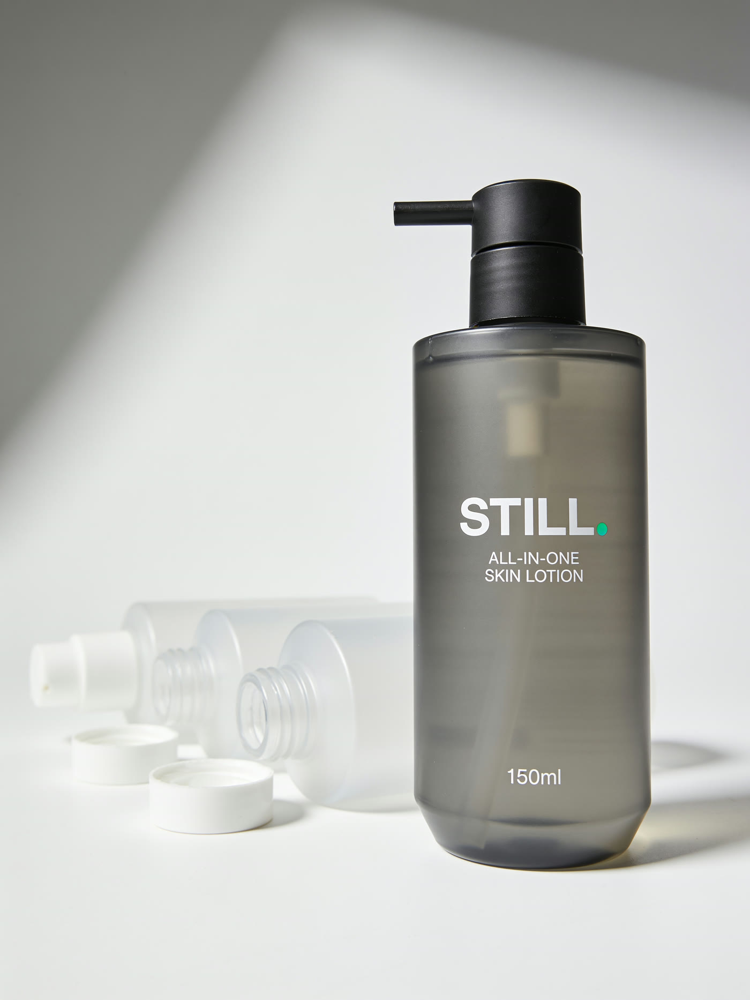
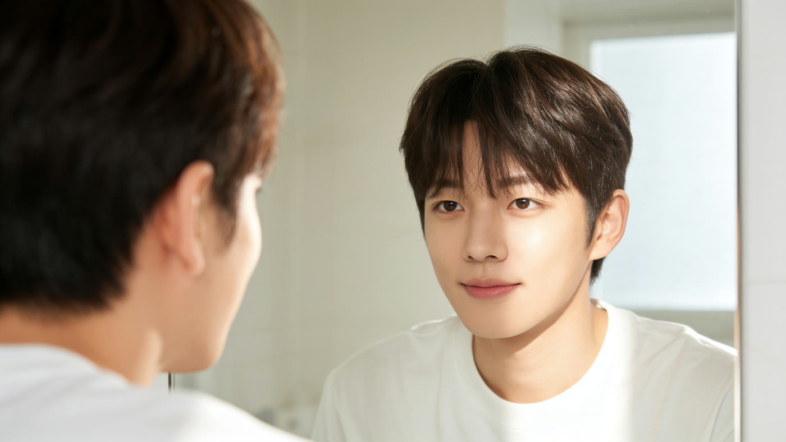
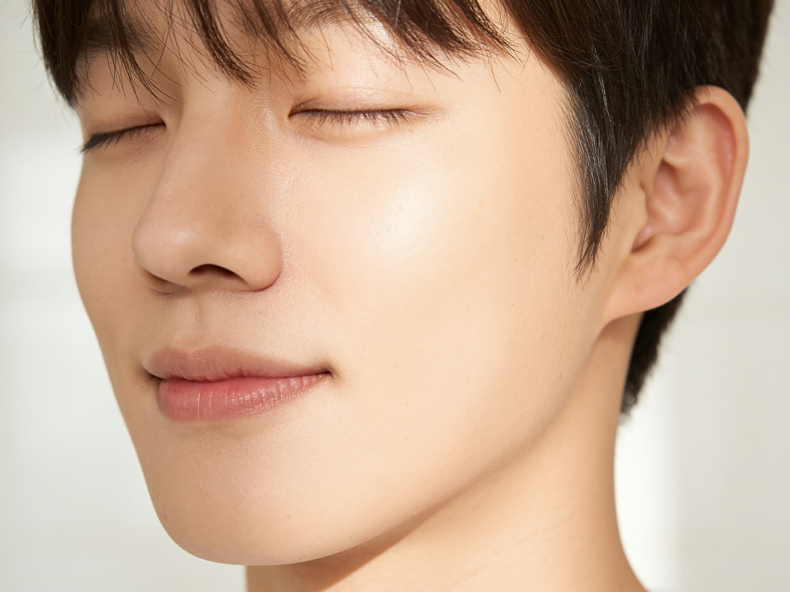
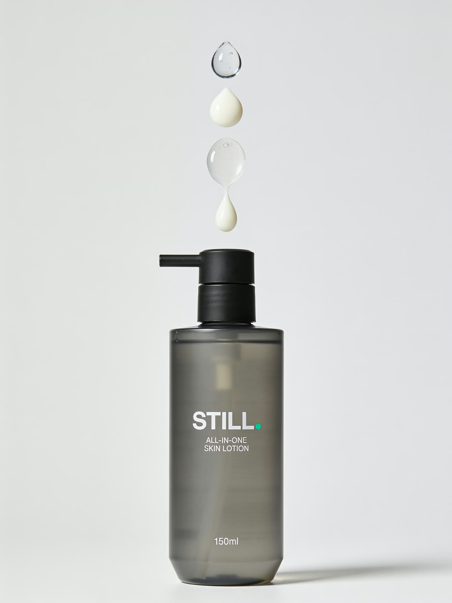
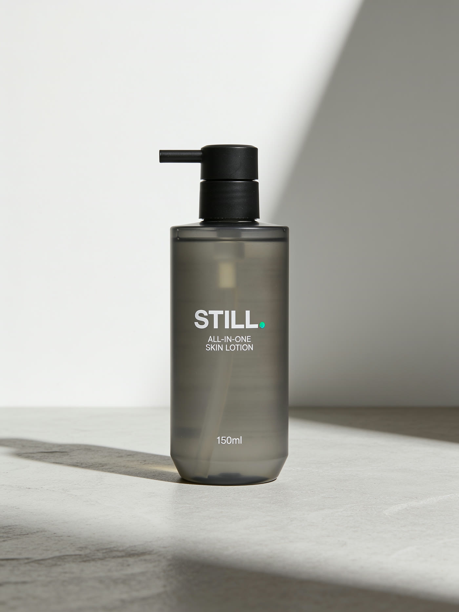
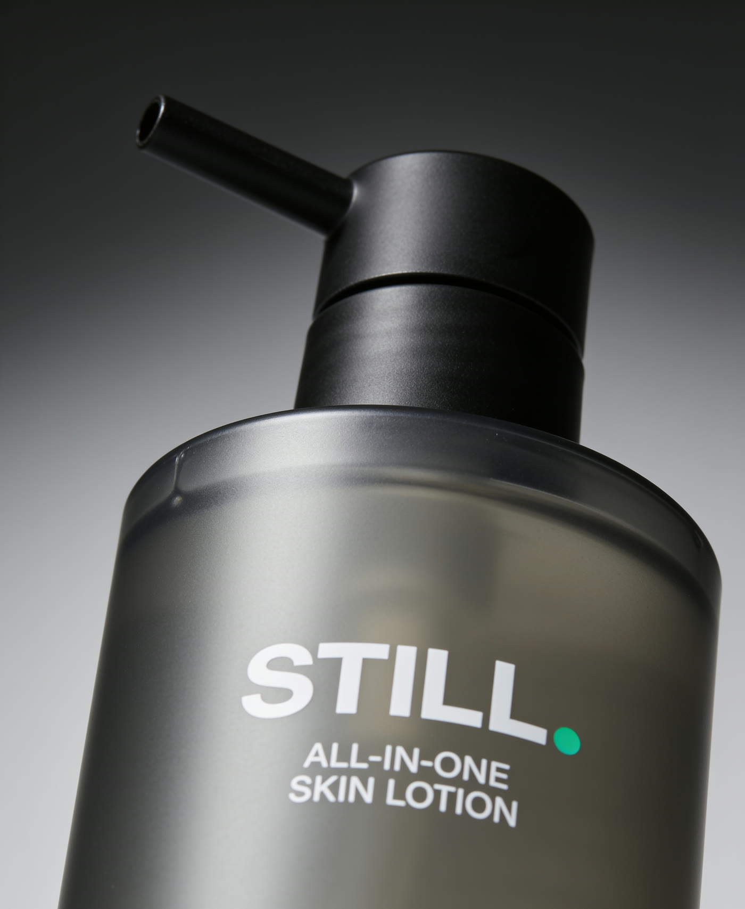

Hybrid Skincare
STILL.
스킨, 로션, 에센스의 경계를 허문
Hybrid Skincare STILL.

3 → 1세 단계를 한 번으로
150ml약 2개월 사용량
1 PUMP아침 저녁 한 번씩

Morning Routine
거울 앞에서 보내는 시간,
이제 30초면 됩니다.
스킨 바르고, 로션 바르고, 에센스까지. 매일 세 병을 여는 일은 생각보다 귀찮습니다. STILL.은 세안 후 한 번의 펌핑으로 그 과정을 끝냅니다.
남성 피부를 기준으로 설계한 하이브리드 제형입니다.
Fast Absorption
끈적임 없이, 빠르게 흡수됩니다.
투명한 워터 제형이 손끝을 따라 피부에 스며듭니다. 바르고 바로 옷을 입어도 남는 느낌이 없습니다.

0초투명하게 펴 발림
3초윤기가 가라앉음
5초산뜻한 마무리

After
바른 뒤에도
피부는 고요하게.
번들거리지 않고, 당기지 않고, 들뜨지 않습니다. 바르기 전과 같은 얼굴, 조금 더 편안해진 피부. 그래서 이름이 STILL.입니다.
Ingredients
피부에 좋은 성분만
한 병에 담았습니다.
스킨의 수분, 로션의 보습, 에센스의 영양. 세 제품이 하던 일을 하나의 투명한 제형 안에서 함께 합니다.

Hydration히알루론산피부 깊숙이 수분을 채우고 오래 붙잡아 둡니다.
Soothing판테놀면도 후 예민해진 피부를 편안하게 가라앉힙니다.
Barrier세라마이드피부 장벽을 촘촘하게 채워 수분이 달아나지 않게 합니다.
Texture나이아신아마이드칙칙한 피부 톤과 거친 결을 매끈하게 정돈합니다.
Calming병풀 추출물외부 자극으로 붉어진 피부를 차분하게 돌봅니다.
Free From무향료 · 무알코올 · 무색소피부에 필요 없는 것은 넣지 않았습니다.

How to Use
세안 후, 한 번만.
01.
세안 후 물기를 가볍게 닦아냅니다.
02.
한두 번 펌핑해 손바닥에 덜어냅니다.
03.
얼굴 전체에 펴 바르고 가볍게 두드립니다.
아침과 저녁, 하루 두 번이면 충분합니다. 건조한 날에는 한 번 더 덧발라도 끈적이지 않습니다.

Design
욕실 어디에 두어도
거슬리지 않게.
무광 반투명 보틀과 블랙 펌프. 한 손으로 누르고, 남은 양이 한눈에 보입니다. 뚜껑을 열고 닫을 일이 없어 젖은 손으로도 편합니다.
| 제품명 | STILL. 올인원 스킨 로션 |
|---|---|
| 용량 | 150ml |
| 제형 | 투명 워터 타입 |
| 사용 대상 | 모든 남성 피부, 특히 지성 · 복합성 |
| 향 | 무향 |
STILL.
스타일은 바뀌어도, 피부는 그대로.
ALL-IN-ONE SKIN LOTION · 150ml